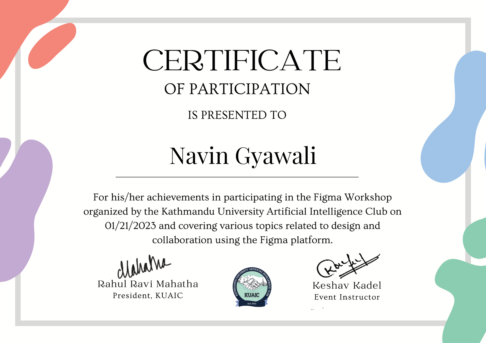
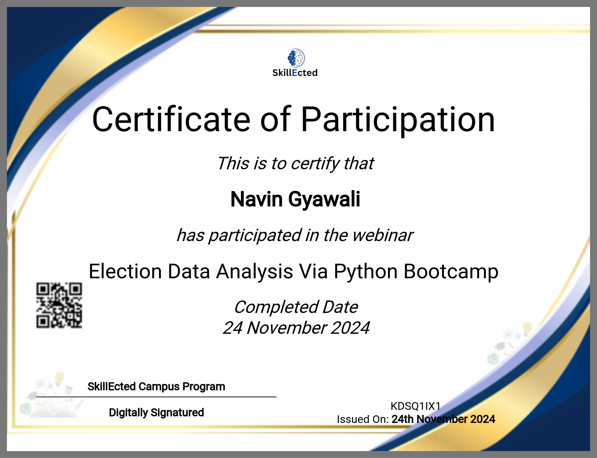

Licenses & Certifications

Figma
Gained hands-on experience in UI/UX design and learned to create intuitive and visually engaging designs.Grateful to the organizers for providing such an enriching learning experience and equipping us with practical skills in design tools.

Github
Thrilled to have earned my Git and GitHub Certification, showcasing my proficiency in version control and collaborative coding practices!

Census Data Analysis
Proud to have earned a Certification in Election Data Analysis, highlighting my skills in analyzing and interpreting election-related data to uncover trends, patterns, and actionable insights.